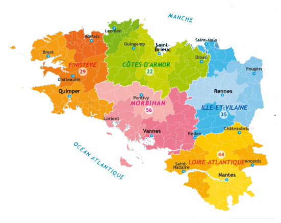

Accueil
Venez découvrir la Bretagne !
Région de l’ouest de la France, elle se situe entre la Manche et le golfe de Gascogne. Marquée par son histoire la Bretagne se divise en quatre départements: 
- les Côtes d’Armor (22),
- le Finistère (29),
- l’Ille-et-Vilaine (35),
- le Morbihan (56),
- (Loire-Atlantique(44)).
Breizh (« Bretagne » en breton), est une terre riche en culture et en diversité bien connue en France ; http://www.breizhtourisme.wordpress.com vous fera découvrir la Bretagne à travers ses destinations majeures, ses activités traditionnelles et divertissantes majoritairement maritimes. Nous vous ferons découvrir ou redécouvrir les délices gastronomiques de la région. Enfin vous pourrez vous replonger dans cette culture atypique et traditionnelle qu’est la culture bretonne.